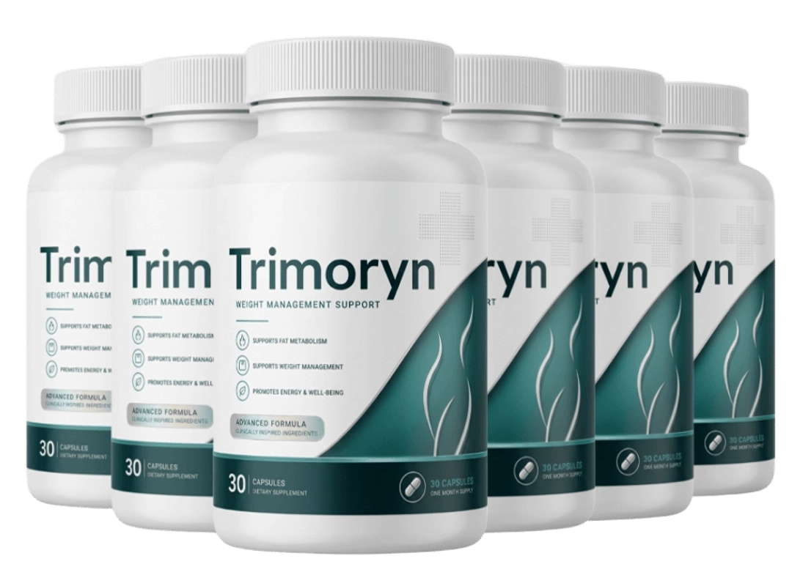

What Is Trimoryn And How Does It Work?
Eating less. Moving more. Cutting carbs, counting calories, doing everything "right" — and the scale still will not budge past a certain number. If that sounds familiar, the problem was never willpower. It is something happening at the cellular level that no amount of discipline alone can override.
Metabolic researchers refer to it as the fat lock. When cortisol and insulin stay elevated for years — from stress, poor sleep, processed food, or simple aging — fat cells become resistant to releasing their stored energy. The body starts hoarding fat instead of burning it, even in a calorie deficit. Your metabolism is not broken; it has been locked into storage mode.
Think of it like a car stuck in park while the engine is still running. You can press the gas pedal as hard as you want — diet harder, exercise longer — but if the gearshift itself will not move, nothing changes. The lock has to be released before the effort can actually go anywhere.
Trimoryn is a daily capsule built around thermogenic and metabolism-supporting compounds — led by Green Tea Leaf Extract (EGCG), Garcinia Cambogia, and Forskolin — formulated to help release the fat lock, support healthy insulin response, and encourage the body to use stored fat for energy instead of clinging to it. No prescription, no restrictive meal plan required, no extreme stimulant crash. Just a capsule taken daily.
This is not an overnight transformation. The fat lock took years to set in; releasing it takes consistent daily use. Most people report noticeably reduced cravings and steadier energy within the first two to three weeks, with fuller changes in body composition building over 60 to 90 days of continuous use.
Trimoryn Ingredients
Every ingredient in the formula targets a specific piece of the fat lock — from the sluggish thermogenesis that needs a jump-start, to the blood sugar swings that trigger cravings, to the stored fat that needs a clear signal to finally release.
- Green Tea Leaf Extract (EGCG) (500mg): A concentrated source of catechins shown to support thermogenesis — the process by which the body converts stored fat into usable energy.
- Garcinia Cambogia (60% HCA) (500mg): Contains hydroxycitric acid, which supports healthy appetite regulation and may help reduce the conversion of excess carbohydrates into stored fat.
- Forskolin (Coleus Forskohlii) (250mg): A traditional root extract studied for its ability to activate enzymes involved in breaking down stored fat cells for energy.
- L-Carnitine Tartrate (500mg): An amino acid compound that helps shuttle fatty acids into the mitochondria, where they can be burned for fuel instead of stored.
- Chromium Picolinate (200mcg): A trace mineral that supports healthy insulin sensitivity, helping smooth out the blood sugar spikes and crashes that drive food cravings.
- Cayenne Pepper Extract (Capsaicin) (100mg): A natural thermogenic compound that gently raises core body temperature, supporting increased calorie burn throughout the day.
- Caffeine Anhydrous (100mg): A clean source of energy support that works alongside the thermogenic blend without the jittery spike of high-dose stimulants.
- Vitamin B12 (500mcg): Plays a central role in converting food into usable energy, helping offset the fatigue that often accompanies calorie-conscious eating.
The blend is deliberate. Thermogenics raise the body's baseline calorie burn. Appetite and blood-sugar support quiet the cravings that sabotage consistency. Fat-transport compounds make sure what gets released actually gets burned — together working to release the fat lock that years of stress and processed food help build.
Trimoryn Side Effects
The formula is built from plant extracts, amino acids, and trace minerals the body already knows how to process — not synthetic fat burners loaded with proprietary stimulant blends that spike the heart rate.
Trimoryn is manufactured in an FDA-registered, GMP-certified facility in the United States. Every batch is third-party tested for purity and potency before it ships. The capsule is easy to swallow and taken once daily, fitting into a normal morning routine without disruption.
Among the thousands of people who have used the formula, there are no widespread reports of adverse reactions when taken as directed. The caffeine content is modest and dosed alongside supportive compounds rather than aggressive stimulant stacking.
As with any supplement, anyone who is pregnant, nursing, sensitive to caffeine, managing a medical condition, or taking prescription medication should consult a healthcare provider before starting.
Trimoryn Dosage
One capsule a day, taken in the morning with a glass of water. That is the entire protocol.
Each bottle of Trimoryn contains a full 30-day supply. Taking it earlier in the day pairs the thermogenic and energy-supporting ingredients with the body's natural activity window, and helps avoid any impact on sleep.
Consistency is what releases the fat lock — this is a metabolic pattern that took years to set in, and the ingredients in the formula work cumulatively over weeks, not hours. Skipping days slows the process down. People who take it daily without interruption for a full 60 to 90 days report the most noticeable changes in cravings, energy, and body composition.
This is exactly why Trimoryn is offered in multi-bottle kits — locking in a longer supply removes the gap between orders that breaks the streak and resets progress.
Trimoryn – Refund Policy
Every order of Trimoryn is backed by a 60-day, no-questions-asked money-back guarantee.
That is a full 60 days to take the capsules daily, follow the routine, and judge the results for yourself — how your clothes fit, how your energy holds up through the afternoon, how often cravings show up between meals. The guarantee exists because the company stands behind what the formula does with consistent use, and is willing to back that with a full refund if it does not deliver.
For complete terms and to confirm the current guarantee window, visit the official Trimoryn website directly.
Trimoryn Customer Reviews
 Robert Harmon
Phoenix, AZ
Verified Purchase – 6 Bottles
Robert Harmon
Phoenix, AZ
Verified Purchase – 6 Bottles
"I have tried more diets than I can count and always hit the same wall around week two — the cravings would win, every time. My daughter told me about Trimoryn after she saw a friend using it. The first thing I noticed was that the 3pm urge to raid the pantry just quieted down. Two months in, I've dropped two pant sizes without changing much else about how I eat. I'm on my sixth bottle because I'm finally not fighting my own body anymore."
 David Moretti
Chicago, IL
Verified Purchase – 3 Bottles
David Moretti
Chicago, IL
Verified Purchase – 3 Bottles
"Desk job, long commute, zero energy left for the gym by the time I got home. A coworker who'd lost noticeable weight recommended Trimoryn and I figured I had nothing to lose. Within three weeks my afternoon energy crash was gone, so I actually started walking after dinner instead of collapsing on the couch. That alone changed everything. Down 14 pounds and still going."
 Dorothy Sullivan
Denver, CO
Verified Purchase – 3 Bottles
Dorothy Sullivan
Denver, CO
Verified Purchase – 3 Bottles
"After menopause my weight crept up no matter what I tried, and I'd basically accepted it as the new normal. My sister sent me a three-bottle kit of Trimoryn without much explanation, just said to give it two months. Around week five my clothes started fitting differently, and by week eight people at work were asking what I'd changed. I hadn't changed anything else. I still can't quite believe it was something this simple."
Trimoryn – Where To Buy
Trimoryn is available exclusively through its official website. It is not sold in pharmacies, retail stores, or on Amazon, eBay, Walmart, or any other third-party marketplace.
This matters more than it seems. Supplements sold through unofficial channels come with no guarantee of authenticity, no way to verify storage conditions or expiration dates, and no assurance the seal has not been tampered with. The 60-day money-back guarantee only applies to orders placed directly through the official site — a third-party purchase carries none of that protection.
The official website is also the only place to access multi-bottle pricing and current shipping offers. There are no legitimate coupon codes circulating elsewhere; the pricing shown on the official page is the real pricing.
To ensure you're getting the authentic product, most users choose to visit the official website directly.
Is Trimoryn A Scam?
Nothing about the formula, the manufacturing, or the guarantee points in that direction.
The ingredients — Green Tea Leaf Extract (EGCG), Garcinia Cambogia, Forskolin, L-Carnitine, Chromium Picolinate, Cayenne Pepper Extract — are well documented, dosed at meaningful amounts, and produced in an FDA-registered, GMP-certified facility. The guarantee provides a full 60 days to judge results directly. The pattern in customer reviews lines up with what the formula is designed to do: support thermogenesis, quiet cravings, and help release the fat lock that builds up over years of stress and blood sugar swings.
No supplement replaces a healthy diet or medical treatment for a diagnosed condition, and results vary from person to person. If you have struggled with stubborn weight for years with no improvement, healthy skepticism is understandable. But a formula backed by a full refund window is not asking for blind trust — it is asking to be tried and judged on results.
Try it for 60 days. If your results haven't changed, send it back and you are out nothing but a few minutes of your time.
As with any supplement, consult a healthcare professional if you have an existing condition or take prescription medication.

For those who want to verify product details or check current availability, the official Trimoryn website remains the safest and most reliable option.